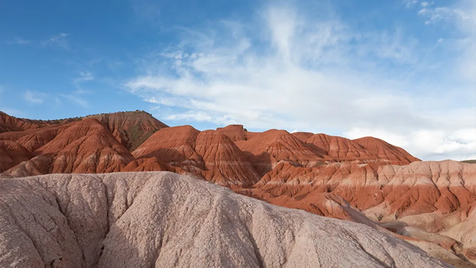
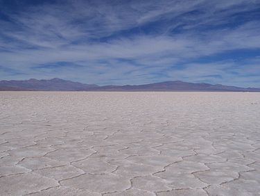
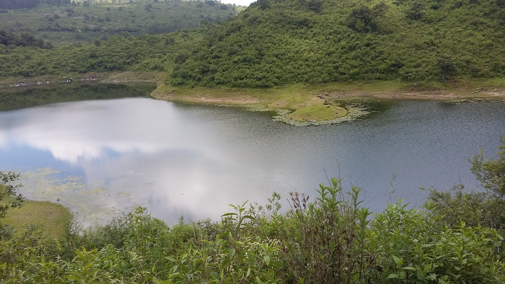

Los 4 mejores lugares turistico del mundo que tienes que visitar alguna vez
Valle de la Luna de Cusi
Valle de la luna Cusi
Valle de la Luna Cerquita de la localidad de Cusi Cusi encontrás este destino desértico, con quebradas y columnas producto de la erosión de las lluvias y del viento sobre las piedras. Sus colores son impactantes y van del rojo al blanco pasando por morado, verde y beige.
Ubicacion del lugar en google mapsEl puente del diablo

puente del diablo
Puente del diablo Si te gusta la aventura tenés que conocer este puente natural de piedra, que une distintos cerros del cordón montañoso Espinazo del Diablo, cerca del pueblo Tres Cruces. Eso sí: el camino es un desafío para los amantes del trekking.
Ubicacion del lugar en google mapsSalinas Grandes (Jujuy y Salta)
salinas grandes
Salinas Grandes Este mar de sal tiene 212 kilómetros cuadrados de superficie, lo que lo convierte en uno de los más grandes del mundo. Tip: en verano podés disfrutar del “efecto espejo” que se forma cuando el agua de lluvia acumulada en el suelo refleja el cielo.
Ubicacion del lugar en google mapsLagunas de Yala
Lagunas de Yala
Lagunas de Yala Si querés pasar un día al aire libre cerca de la capital jujeña, las Lagunas de Yala son un planazo. Se trata de seis espejos de agua rodeados de vegetación, dentro del Parque Provincial Potrero de Yala.
Ubicacion del lugar en google maps